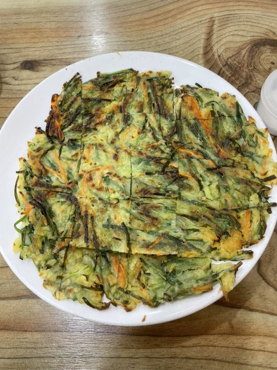

- 음식
- 카페
- 공간
음식
칼국수집이지만 "부추전"맛집
고향소문난손칼국수
경남 밀양시 중앙로 67
손칼국수 6,000원 비빔칼국수 8,000원 부추전 8,000원
051-352-7001

밀양역 바로 앞 칼국수 집이다.
기차를 기다리며 저녁으로 칼국수를 선택했다.
비가 주륵주륵 내리는 소리, 전이 자작하게 구워지는 소리, 칼국수 면을 툭툭 자르는 소리,
가게 내부는 친숙하면서도 아늑한 느낌이다.
사장님의 인자한 미소와 함께 동네에 있는 정겨운 가게 느낌.